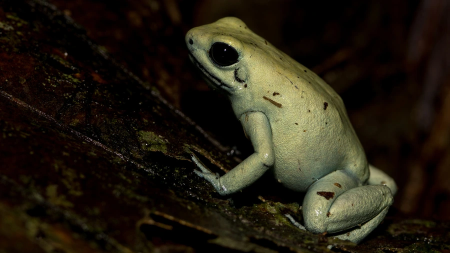

两栖动物 · 动物界
金黄箭毒蛙 Phyllobates terribilis

世界上最毒的动物之一，通体金黄，皮肤分泌的蟾毒色胺类毒素极强，原住民曾用其毒液制作吹箭，毒性在蛙类中名列前茅。
- 分类
- 门脊索动物门纲两栖纲目无尾目科箭毒蛙科属叶毒蛙属
- 栖息环境
- 哥伦比亚西部太平洋沿岸的湿润低地雨林落叶层
- 地理分布
- 哥伦比亚西部考卡省与乔科省等沿海雨林
- 保护级别
- IUCN 濒危（EN）；CITES 附录 II；非中国原产
物种志
金黄箭毒蛙体长 4.5–5.5 厘米，雌性略大，身体粗壮，皮肤光滑，通体呈明亮的金黄、橙黄或淡绿色，四肢无明显斑纹，趾端有吸盘。它的皮肤腺体能分泌蟾毒色胺类毒素，毒性极强，一只个体的毒素足以对大型动物造成严重威胁，是世界上最毒的脊椎动物之一。
它仅分布于哥伦比亚西部的太平洋沿岸低地雨林，栖息在潮湿的落叶层中，白天活动，以蚂蚁、白蚁、螨虫和小甲虫为食，毒素正是从这些猎物中富集而来。繁殖期雄蛙鸣叫求偶，雌蛙产卵约 10–20 枚，雄蛙把孵化的蝌蚪背到溪流或积水处，蝌蚪在水中发育变态。由于分布狭窄、雨林砍伐和非法宠物贸易，其种群受到威胁，被列为濒危物种；人工饲养个体因食物改变，毒性会明显减弱，但在中国仍属外来物种，不可随意放生。
形态与习性
- 食性蚂蚁、白蚁、螨虫和小甲虫
- 体长4.5–5.5 cm
- 毒性皮肤毒素极强，是世界上最毒的动物之一
- 繁殖卵生，每窝 10–20 枚，雄蛙背蝌蚪到积水处
- 活动节律昼行性
- 寿命约 10 年以上
趣味知识
- 金黄箭毒蛙是世界上最毒的脊椎动物之一，皮肤毒素可阻断神经肌肉信号。
- 它的毒素来自食物，人工饲养改喂饲料后毒性会大幅降低。
- 哥伦比亚原住民曾用它的毒素涂抹吹箭，是当地传统的狩猎方式。